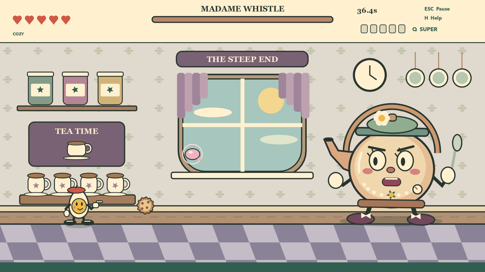
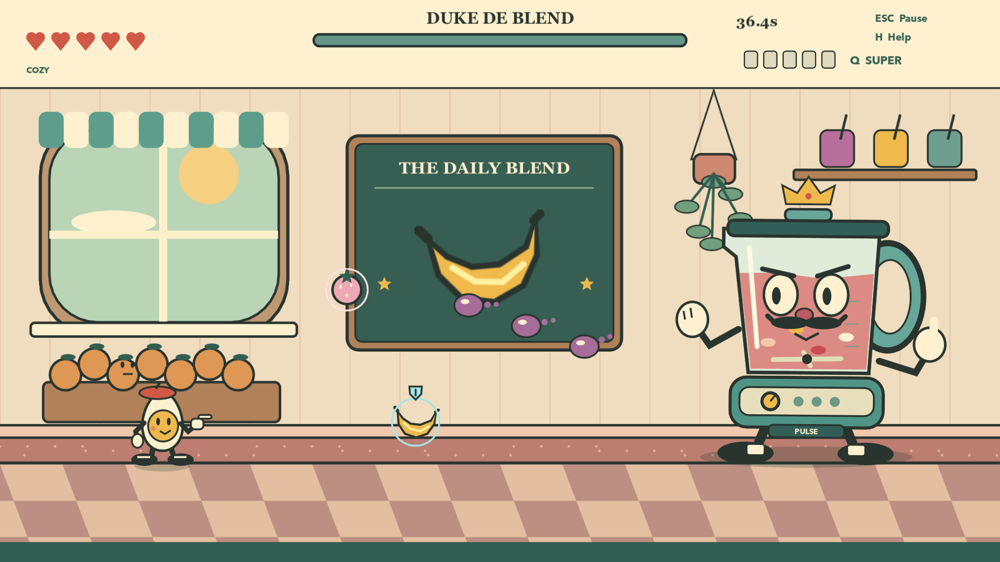
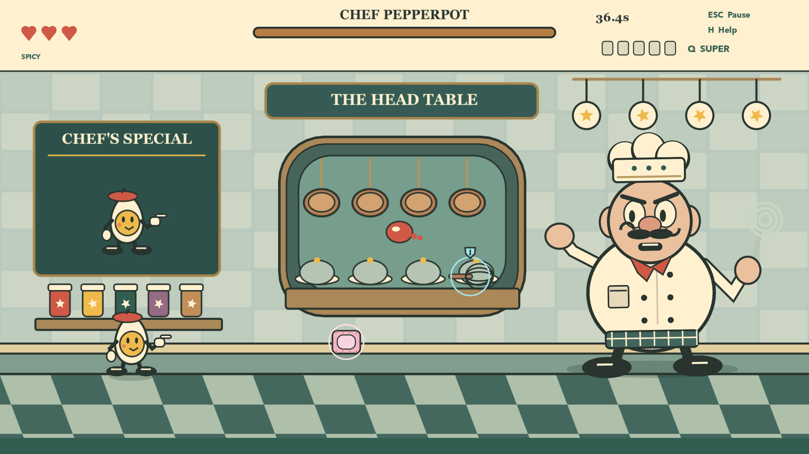

Baron
von Toast
Crumb waves and breakfast chaos in a very unfriendly toaster’s kitchen.
A brave little egg. Five very unreasonable bosses. Jump, dash, parry, and shoot your way through a kitchen with a grudge.
Single player. Plays offline. No ads or in-app purchases.

Play as Sunny, an egg with a chef’s beret and a finger gun. Every kitchen has a personality. Every boss gets angrier at half health.
Crumb waves and breakfast chaos in a very unfriendly toaster’s kitchen.
Banana boomerangs, flying berries, and one crowned smoothie tyrant.
Dodge tea splashes and biscuits before teatime reaches boiling point.
A frying-pan chef serves up pancakes and a very short fuse.
Beat the first four on Spicy to earn a seat at the Head Table.


Double-jump over trouble. Dash through danger. Parry pink food to keep moving, then unleash an energy ball when your super meter fills.
The game currently uses an English interface. Default controls are shown here; change them in Options → Keyboard.
Move ← / →
Jump twice Space / Z
Shoot F
Dash D
Parry G
Energy ball Q
Pause Esc
Help H / F1
Play offline, keep your progress on your own Mac, and choose the difficulty that suits you. No login, ads, subscriptions, or in-app purchases.
Need a hand with a boss, a keyboard shortcut, or a bug? The support page has the essentials.
Visit game support ↗